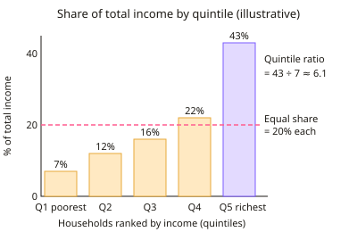

A-level Economics Year 13 · Topic 12
Distribution of income and wealth: poverty and inequality
This topic looks at how income and wealth are shared out, and why poverty and inequality matter.
We will measure inequality with deciles, Lorenz curves and the Gini coefficient, and compare absolute and relative poverty.
Then we examine the causes and consequences of inequality, and evaluate taxes, benefits and other policies to reduce it.
- 7 subtopics
- 245 questions
- Free: 12.1 notes and 10 questions
In this topic
- 12.1Income and wealth: sources, distribution and measures (deciles, quintiles, wealth inequality)Free below · 32 questions
- 12.2The Lorenz curve and the Gini coefficient: construction, calculation and interpretationOpen in Full Marks · 19 questions
- 12.3Absolute and relative poverty: definitions and measurementOpen in Full Marks · 27 questions
- 12.4Causes of poverty and inequality: wage differentials, discrimination, unemployment, wealth accumulation and globalisationOpen in Full Marks · 71 questions
- 12.5Consequences of poverty and inequality for individuals, growth and societyOpen in Full Marks · 30 questions
- 12.6Redistribution through taxation and benefits: progressive, regressive and proportional systemsOpen in Full Marks · 34 questions
- 12.7Other policies to reduce poverty and inequality and the equity-efficiency trade-offOpen in Full Marks · 32 questions
12.1 · Free notes
Income and wealth: sources, distribution and measures (deciles, quintiles, wealth inequality)

Key points
- Income is a flow of money received over a period (e.g. £ per year). Wealth is a stock of assets owned at a point in time (e.g. £ total). Do not confuse the two.
- Sources of income: wages and salaries, self-employment/profit, rent, interest and dividends (income from owning capital), private pensions, and state benefits (transfer payments).
- Forms of wealth: physical wealth (property, vehicles, valuables), financial wealth (savings, shares, bonds), pension wealth and human capital. Human capital is usually excluded from official statistics.
- The ONS measures income at stages: original income (market income before tax and benefits), then gross income (plus cash benefits), disposable income (after direct taxes), and post-tax income (after indirect taxes and benefits in kind). Comparing the stages shows how far fiscal policy redistributes income.
- To show the distribution of income, households are ranked from lowest to highest income and split into quintiles (fifths) or deciles (tenths). Inequality is shown by each group's share of total income. Equality would give each quintile 20%.
- Summary ratios: quintile ratio (S80/S20 = top 20% share ÷ bottom 20% share), decile ratio (P90/P10) and the Palma ratio (top 10% share ÷ bottom 40% share). The higher the ratio, the more unequal the distribution.
- The mean income is usually above the median because a few very high incomes skew the distribution to the right. Official poverty and inequality statistics use the median and equivalised income, which adjusts for household size and composition.
- Wealth is more unequally distributed than income in the UK. ONS data show the top 10% of households hold roughly 40-45% of total wealth, while the bottom half hold under 10%. Wealth accumulates over time, is inherited, and gains from rising asset prices go to existing owners.
- Causes of inequality: differences in human capital and skills, wage differentials, unemployment, inheritance, returns on capital, age and life-cycle stage, discrimination, globalisation and technology, and the design of the tax and benefit system.
- Evaluation: surveys may under-report top incomes, and the informal economy is missed. A snapshot can reflect life-cycle effects (students and retirees have low incomes) rather than lasting inequality. Social mobility matters as well as the static distribution.
In more detail
- Worked quintile ratio: the top 20% receive 40% of income and the bottom 20% receive 8% → S80/S20 = 5.
- Worked mean vs median: incomes of £20k, £25k, £30k, £35k and £190k give a mean of £60k but a median of £30k, because one high income pulls the mean up.
- The wealth gap: in Great Britain the wealthiest 10% of households hold over 40% of all wealth, while the least wealthy half hold under 10%.
- Stages of income: original income → + cash benefits = gross income → − direct taxes = disposable income → − indirect taxes = post-tax income → + benefits in kind (NHS, schools) = final income.
Practice
Income and wealth: sources, distribution and measures (deciles, quintiles, wealth inequality): 10 questions
Pick an answer to check it, or open the answer for the explanation.
1. Which of the following is an example of wealth rather than income?
- Rent received from a tenant
- A monthly salary of £2,400
- Dividends paid on shares
- A house and savings held by a household
Show answer
D: A house and savings held by a household. Wealth is a stock of assets owned at a point in time. Salary, rent and dividends are flows of income over a period.
2. The top 20% of households receive 45% of national income and the bottom 20% receive 5%. What is the quintile ratio (S80/S20)?
- 9
- 40
- 0.11
- 25
Show answer
A: 9. Quintile ratio = 45 ÷ 5 = 9, so the top quintile receives nine times the income share of the bottom quintile.
3. The 10th percentile household income is £12,000 and the 90th percentile is £60,000. What is the P90/P10 ratio?
- 0.2
- 7.2
- 5.0
- £48,000
Show answer
C: 5.0. P90/P10 = 60,000 ÷ 12,000 = 5.0. £48,000 is the difference between them, not the ratio.
4. Which of these is income from owning capital (property income) rather than a transfer payment?
- Interest on a savings account
- Universal Credit
- Child Benefit
- State pension
Show answer
A: Interest on a savings account. Interest is the return on a financial asset. Child Benefit, the state pension and Universal Credit are state transfers.
5. In ONS income statistics, 'original income' is best described as:
- Market income before any taxes or state benefits
- Only wages and salaries
- Income after direct taxes and cash benefits
- Income after indirect taxes and benefits in kind
Show answer
A: Market income before any taxes or state benefits. Original income is earnings, self-employment, investment and private pension income. Taxes and benefits are applied in later stages.
6. Which is the best reason why wealth is more unequally distributed than income in the UK?
- It accumulates over time, is inherited and rises with asset prices
- Everyone receives the same pension wealth
- Wealth is taxed at higher rates than income
- Wages differ more than asset values
Show answer
A: It accumulates over time, is inherited and rises with asset prices. Wealth is a stock that builds up over generations through saving and inheritance. Asset price rises benefit existing owners, widening the gap.
7. House prices rise 30% over a decade while wages stay flat. What is the likely effect on wealth inequality between owners and non-owners?
- It falls because income inequality falls
- It is unchanged
- It narrows
- It widens
Show answer
D: It widens. Owners' property wealth rises while renters gain nothing, so the wealth gap between the two groups widens.
8. The top 10% of households receive 30% of income and the bottom 40% receive 14%. What is the Palma ratio?
- 15
- 0.47
- 2.1
- 28
Show answer
C: 2.1. Palma ratio = share of top 10% ÷ share of bottom 40% = 30 ÷ 14 ≈ 2.1.
9. Why do statisticians use equivalised household income when comparing living standards?
- To exclude benefits from income
- To remove the effect of inflation
- To adjust for differences in household size and composition
- To include wealth as well as income
Show answer
C: To adjust for differences in household size and composition. Equivalisation recognises that larger households need more income to reach the same living standard as smaller ones.
10. The bottom quintile's income share rises from 4% to 8% after taxes and benefits, and the top quintile's falls from 50% to 40%. This shows that:
- Absolute poverty is eliminated
- Taxes and benefits redistribute income and reduce inequality
- Wealth inequality has fallen
- Taxes and benefits increase inequality
Show answer
B: Taxes and benefits redistribute income and reduce inequality. The poorest gain share and the richest lose share after tax and benefits, so the fiscal system is redistributive. This tells us nothing about wealth.
Keep going in Full Marks
Full Marks has 32 questions on Income and wealth: sources, distribution and measures (deciles, quintiles, wealth inequality) (22 more than here), set out in practice levels. You also get notes and 3D models for all 7 subtopics of Distribution of income and wealth: poverty and inequality, plus games, timed exams and past papers.